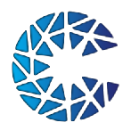

<title>Specialized Investment Fund</title>
<meta name="claude:viewport-fit-sides" content="cover">
<link rel="preconnect" href="https://fonts.googleapis.com">
<link rel="preconnect" href="https://fonts.gstatic.com" crossorigin>
<link rel="stylesheet" href="https://fonts.googleapis.com/css2?family=Montserrat:wght@400;500;600;700;800&display=swap">
<style>
/* Layout: one column of compact sections, 50px apart, each sized to sit inside a single laptop viewport.
   Spacing scale 4/8/16/24/32. Type scale 64 (hero) / 40 (section headings) / 24 / 18 / 16, 14 for legal copy only. */
:root{
  --ink:#1D1D1F;
  --muted:#4B5563;
  --paper:#FFFFFF;
  --mist:#F5F5F7;
  --card:#EEF0F4;
  --line:#E3E6EC;
  --accent:#0071B9;      /* 5.2:1 on white */
  --accent-text:#005E95; /* small accent text, 6.9:1 */
  --deep:#003B80;
  --indigo:#25207A;
  --teal:#00A3A3;
  --violet:#7B5BB6;
  --tint-blue:#E6F6FD;
  --tint-teal:#E5F5F3;
  --tint-violet:#F1ECF8;
  --note:#FFF9E8;
  --note-line:#EFE3BF;
  --on-dark:#FFFFFF;
  --on-dark-muted:#D6E4F5;
  --grad:linear-gradient(135deg,#0071B9 0%,#003B80 55%,#25207A 100%);
  --f:"Montserrat",ui-sans-serif,system-ui,-apple-system,"Segoe UI",Arial,sans-serif;
  --s1:4px;--s2:8px;--s3:16px;--s4:24px;--s5:32px;--sec:50px;
  --gut:100px;
  --r:16px;--r-lg:24px;
  --t-hero:64px;--t-h2:40px;--t-l:24px;--t-m:18px;--t-s:16px;--t-xs:14px;
  color-scheme:light;
}
*{box-sizing:border-box}
[hidden]{display:none!important}
html{scroll-behavior:smooth}
body{margin:0;background:var(--paper);color:var(--ink);font-family:var(--f);font-size:var(--t-s);line-height:1.5;-webkit-font-smoothing:antialiased;overflow-x:clip}
h1,h2,h3,p{margin:0}
h1,h2,h3{text-wrap:balance}
ul{margin:0}
a{color:var(--accent-text);text-underline-offset:3px}
a:hover{color:var(--ink)}
:focus-visible{outline:3px solid var(--accent);outline-offset:3px;border-radius:8px}
button{font:inherit;color:inherit}
.wrap{max-width:1440px;margin:0 auto;padding-left:max(var(--gut),env(safe-area-inset-left,0px));padding-right:max(var(--gut),env(safe-area-inset-right,0px))}
.sec{padding-block:var(--sec)}
.sec.alt{background:var(--mist)}
.h2{font-size:var(--t-h2);line-height:1.2;font-weight:700;letter-spacing:-.01em;text-align:center}
.h2 em{font-style:normal;color:var(--accent)}
.head{display:grid;gap:var(--s3);justify-items:center;text-align:center;margin-bottom:var(--s4)}
.head p{max-width:760px;color:var(--muted);font-size:var(--t-s)}
.js .reveal{transition:transform .7s cubic-bezier(.2,.7,.1,1)}
.js .reveal:not(.in){transform:translateY(24px)}

/* ---------- header ---------- */
.top{position:fixed;inset:0 0 auto;z-index:20;padding-top:env(safe-area-inset-top,0px);transition:background .3s,box-shadow .3s}
.top .wrap{display:flex;align-items:center;justify-content:space-between;gap:var(--s3);height:72px;margin-top:var(--s4);transition:margin-top .3s}
.top.solid .wrap{margin-top:0}
.top.solid{background:rgba(255,255,255,.96);box-shadow:0 1px 0 var(--line)}
.brand{display:flex;align-items:center;gap:var(--s2);text-decoration:none;color:var(--on-dark)}
.brand img{width:36px;height:36px;padding:3px;border-radius:50%;background:var(--paper)}
.brand b{display:block;font-size:var(--t-m);font-weight:800;letter-spacing:.02em;line-height:1}
.brand small{display:block;font-size:11px;font-weight:600;line-height:1.3}
.nav{display:flex;gap:var(--s1);padding:var(--s1);border-radius:999px;background:rgba(255,255,255,.16);border:1px solid rgba(255,255,255,.3);backdrop-filter:blur(10px);-webkit-backdrop-filter:blur(10px)}
.nav a{padding:var(--s2) var(--s3);border-radius:999px;font-size:var(--t-xs);font-weight:600;color:var(--on-dark);text-decoration:none}
.nav a[aria-current]{background:var(--paper);color:var(--ink)}
.top.solid .brand{color:var(--ink)}
.top.solid .nav{background:var(--mist);border-color:var(--line)}
.top.solid .nav a{color:var(--ink)}
.menu{display:none;width:44px;height:44px;border-radius:12px;border:1px solid rgba(255,255,255,.4);background:rgba(255,255,255,.16);cursor:pointer;place-items:center}
.menu i,.menu i::before,.menu i::after{display:block;width:18px;height:2px;border-radius:2px;background:var(--on-dark);position:relative}
.menu i::before,.menu i::after{content:"";position:absolute;left:0}
.menu i::before{top:-6px}.menu i::after{top:6px}
.top.solid .menu{border-color:var(--line);background:var(--mist)}
.top.solid .menu i,.top.solid .menu i::before,.top.solid .menu i::after{background:var(--ink)}

/* ---------- hero ---------- */
.hero{padding:12px 12px 0}
.hero-card{position:relative;height:clamp(440px,74svh,680px);border-radius:var(--r-lg);overflow:hidden;background:var(--deep) url("assets/meeting.jpg") 60% 50%/cover no-repeat}
.hero-card canvas{position:absolute;left:0;top:-6%;width:100%;height:112%;transform:translate3d(0,var(--py,0px),0)}
.hero-card::after{content:"";position:absolute;inset:0;background:linear-gradient(90deg,rgba(0,24,60,.8) 0%,rgba(0,24,60,.5) 40%,rgba(0,24,60,0) 68%),linear-gradient(0deg,rgba(0,24,60,.35),rgba(0,24,60,0) 40%),linear-gradient(180deg,rgba(0,24,60,.45),rgba(0,24,60,0) 22%)}
.hero-copy{position:absolute;inset:0;z-index:1;display:flex;align-items:flex-end;padding-bottom:clamp(32px,9svh,88px)}
.hero-copy .wrap{width:100%;padding-left:max(calc(var(--gut) - 12px),env(safe-area-inset-left,0px))}
.hero h1{color:var(--on-dark);font-size:var(--t-hero);line-height:1.12;font-weight:700;letter-spacing:-.015em;display:grid;gap:var(--s2)}
.hero h1 .k{font-size:var(--t-m);font-weight:600;letter-spacing:.02em}
.hero h1 .b{max-width:10em}
.what{text-align:center;padding-block:var(--sec)}
.what .wrap{display:grid;gap:var(--s3);justify-items:center}
.what h2{font-size:var(--t-m);font-weight:700;color:var(--accent-text)}
.what p{font-size:var(--t-l);line-height:1.5;font-weight:500;max-width:960px}

/* ---------- why ---------- */
.steps{display:grid;grid-template-columns:repeat(3,minmax(0,1fr));gap:var(--s4);max-width:1000px;margin:0 auto;position:relative;list-style:none;padding:0}
.steps::before{content:"";position:absolute;top:27px;left:16.6%;right:16.6%;height:2px;background:repeating-linear-gradient(90deg,#9FD3EE 0 6px,transparent 6px 12px);animation:march 1.2s linear infinite}
@keyframes march{to{background-position:12px 0}}
.steps li{display:grid;justify-items:center;gap:var(--s3);text-align:center}
.dot{position:relative;width:56px;height:56px;border-radius:50%;background:var(--paper);box-shadow:0 4px 16px rgba(0,59,128,.12);display:grid;place-items:center}
.dot::before{content:"";position:absolute;inset:-8px;border-radius:50%;border:1px solid #CDE8F6}
.dot i{width:16px;height:16px;border-radius:50%;background:var(--accent)}
.steps li:nth-child(2) .dot i{background:var(--teal)}
.steps li:nth-child(3) .dot i{background:var(--violet);border-radius:3px;transform:rotate(45deg)}
.steps p{font-size:var(--t-s);font-weight:600;max-width:280px}

/* ---------- features ---------- */
.bento{display:grid;grid-template-columns:minmax(0,1.15fr) minmax(0,1fr) minmax(0,1fr);gap:var(--s3)}
.fsub{display:contents}
.fcard{position:relative;isolation:isolate;overflow:hidden;background:var(--card);border-radius:var(--r);padding:var(--s4);display:grid;gap:var(--s2);align-content:start;cursor:default;--cd:.12s;transition:color .2s var(--cd),transform .35s cubic-bezier(.2,.7,.1,1),box-shadow .35s}
.fcard::before{content:"";position:absolute;inset:0;z-index:-1;background:var(--grad);transform:scaleY(0);transform-origin:50% 100%;transition:transform .38s cubic-bezier(.65,0,.35,1)}
.fcard h3{font-size:var(--t-m);font-weight:700}
.fcard p{color:var(--muted);transition:color .2s var(--cd)}
.fcard .ic{width:40px;height:40px;border-radius:12px;background:var(--paper);display:grid;place-items:center;margin-bottom:var(--s2);transition:transform .45s cubic-bezier(.34,1.56,.64,1)}
/* white on the gradient's lightest stop (#0071B9) is 5.2:1, so every line of text switches to white,
   timed to land just as the fill reaches it */
.fcard:hover,.fcard:focus-within{--cd:.24s;color:var(--on-dark);transform:translateY(-4px);box-shadow:0 18px 36px -14px rgba(0,59,128,.45)}
.fcard:hover::before,.fcard:focus-within::before{transform:scaleY(1)}
.fcard:hover p,.fcard:hover .amt span,.fcard:hover .amt b,.fcard:hover strong{color:var(--on-dark)}
.fcard:hover .ic{transform:scale(1.1) rotate(-6deg)}
.fcard .ic svg{width:24px;height:24px}
.fmain{grid-row:span 2;align-content:space-between;gap:var(--s4)}
.fmain::after{content:"";position:absolute;right:-60px;bottom:-60px;width:200px;height:200px;border-radius:50%;border:1px solid rgba(0,113,185,.18);z-index:-1;transition:transform .8s cubic-bezier(.2,.7,.1,1),border-color .35s}
.fmain:hover::after{transform:scale(1.25);border-color:rgba(255,255,255,.3)}
.fmain .amt{display:grid;gap:var(--s2)}
.fmain .amt b{font-size:var(--t-hero);line-height:1;font-weight:800;color:var(--accent);transition:color .2s var(--cd)}
.fmain .amt span{font-size:var(--t-s);color:var(--muted);transition:color .2s var(--cd)}

/* ---------- advantages ---------- */
.adv-list{display:grid;grid-template-columns:repeat(6,minmax(0,1fr));gap:var(--s3);max-width:1040px;margin:0 auto;list-style:none;padding:0}
.adv-list li{grid-column:span 2;display:grid;gap:var(--s3);align-content:start;background:var(--paper);border:1px solid var(--line);border-radius:var(--r);padding:var(--s4);transition:transform .25s,box-shadow .25s,border-color .25s}
.adv-list li:nth-child(n+4){grid-column:span 3}
.adv-list li:hover{transform:translateY(-4px);border-color:transparent;box-shadow:0 12px 28px rgba(0,59,128,.1)}
.adv-list .ic{width:48px;height:48px;border-radius:12px;display:grid;place-items:center;background:var(--tint-blue)}
.adv-list li:nth-child(4) .ic{background:#E8F0FB}
.adv-list li:nth-child(2) .ic{background:var(--tint-teal)}
.adv-list li:nth-child(3) .ic{background:var(--tint-violet)}
.adv-list li:nth-child(5) .ic{background:#FFF1E2}
.adv-list svg{width:24px;height:24px}
.adv-list p{color:var(--muted)}
.adv-list strong{display:block;color:var(--ink);font-size:var(--t-m);margin-bottom:var(--s2)}

/* ---------- who ---------- */
.who-cards{display:grid;grid-template-columns:repeat(3,minmax(0,1fr));gap:var(--s3);max-width:1040px;margin:0 auto}
.wcard{border-radius:var(--r);padding:var(--s4);display:grid;align-content:space-between;gap:var(--s5);min-height:220px;background:var(--tint-blue)}
.wcard:nth-child(2){background:var(--tint-teal)}
.wcard:nth-child(3){background:var(--tint-violet)}
.wcard .av{width:48px;height:48px;border-radius:50%;background:var(--paper);display:grid;place-items:center}
.wcard .av svg{width:26px;height:26px}
.wcard p{font-size:var(--t-s);font-weight:600}

/* ---------- strategies ---------- */
.tabs{display:flex;flex-wrap:wrap;justify-content:center;gap:var(--s1);padding:var(--s1);border-radius:999px;background:var(--card);margin:0 auto var(--s4);width:max-content;max-width:100%}
.tabs button{border:0;background:none;padding:var(--s2) var(--s3);border-radius:999px;font-size:var(--t-xs);font-weight:600;color:var(--muted);cursor:pointer;min-height:40px}
.tabs button[aria-selected="true"]{background:var(--paper);color:var(--ink);box-shadow:0 1px 4px rgba(0,0,0,.08)}
.panel{display:grid;grid-template-columns:repeat(3,minmax(0,1fr));gap:var(--s3);max-width:1040px;margin:0 auto}
.panel[data-n="2"]{grid-template-columns:repeat(2,minmax(0,1fr));max-width:700px}
.scard{background:var(--paper);border-radius:var(--r);padding:var(--s4);display:grid;gap:var(--s2);align-content:start;animation:up .5s cubic-bezier(.2,.7,.1,1) both}
@keyframes up{from{transform:translateY(12px)}}
.scard svg{width:56px;height:56px;margin-bottom:var(--s2)}
.scard h3{font-size:var(--t-m);font-weight:700}
.scard p{color:var(--muted)}
.scard p.spec{color:var(--ink);font-weight:600;padding-top:var(--s2);border-top:1px solid var(--line);margin-top:var(--s1)}

/* ---------- comparison ---------- */
.tbl{max-width:1040px;margin:0 auto;overflow-x:auto;border-radius:var(--r);background:var(--mist)}
table{width:100%;min-width:720px;border-collapse:separate;border-spacing:0;font-size:var(--t-xs)}
th,td{text-align:left;padding:10px var(--s3);vertical-align:top;border-bottom:1px solid var(--line)}
tbody tr:last-child>*{border-bottom:0}
thead th{font-size:var(--t-s);font-weight:700;padding-block:12px}
thead th:first-child{font-size:var(--t-xs);font-weight:600;color:var(--muted)}
tbody th{font-weight:700;width:20%}
td{color:var(--muted);width:26.6%}
.sif{background:var(--paper);color:var(--ink);font-weight:600;border-left:2px solid var(--accent);border-right:2px solid var(--accent)}
thead .sif{background:var(--grad);color:var(--on-dark);border-color:var(--accent);border-radius:12px 12px 0 0}
tbody tr:last-child .sif{border-bottom:2px solid var(--accent);border-radius:0 0 12px 12px}
th:first-child,td:first-child{position:sticky;left:0;background:var(--mist);z-index:1}
.note{max-width:1040px;margin:var(--s3) auto 0;color:var(--muted);font-size:var(--t-xs);text-align:center}

/* ---------- derivatives ---------- */
.der-head{display:grid;grid-template-columns:minmax(0,1fr) minmax(0,1.3fr);gap:var(--s5);align-items:start;margin:0 auto var(--s5);max-width:1040px}
.der-head .h2{text-align:left}
.der-head p{color:var(--muted)}
.der-cards{display:grid;grid-template-columns:repeat(3,minmax(0,1fr));gap:var(--s3);max-width:1040px;margin:0 auto}
.dcard{background:var(--paper);border-radius:var(--r);padding:var(--s3);display:grid;gap:var(--s3);align-content:start}
.dcard svg{width:100%;height:auto;display:block;border-radius:12px}
.dcard p{color:var(--muted)}
.draw{stroke-dasharray:1;stroke-dashoffset:1;transition:stroke-dashoffset 1.4s cubic-bezier(.3,.7,.2,1) .2s}
.in .draw{stroke-dashoffset:0}

/* ---------- risks ---------- */
.rgrid{display:grid;grid-template-columns:repeat(4,minmax(0,1fr));gap:var(--s3);max-width:1040px;margin:0 auto}
.rcard{background:var(--card);border-radius:var(--r);padding:var(--s3);display:grid;grid-template-columns:10px minmax(0,1fr);gap:var(--s2);align-content:start;align-items:baseline}
.rcard p{grid-column:1/-1}
.rcard i{width:10px;height:10px;border-radius:50%;background:var(--accent);align-self:start;margin-top:6px}
.rcard:nth-child(4n+2) i{background:var(--teal)}
.rcard:nth-child(4n+3) i{background:var(--violet)}
.rcard:nth-child(4n) i{background:var(--deep)}
.rcard h3{font-size:var(--t-s);font-weight:700}
.rcard p{color:var(--muted);font-size:var(--t-xs)}
.band{max-width:1040px;margin:var(--s3) auto 0;background:var(--grad);color:var(--on-dark);border-radius:var(--r-lg);padding:var(--s3) var(--s5);display:grid;grid-template-columns:minmax(0,2fr) minmax(0,1fr);gap:var(--s5);align-items:center}
.band h2{font-size:var(--t-l);font-weight:700;margin-bottom:var(--s2)}
.band p{color:var(--on-dark-muted)}
.gauge svg{width:100%;max-width:200px;display:block;margin:0 auto}
.needle{transform-origin:120px 120px;transform:rotate(-80deg);transition:transform 1.6s cubic-bezier(.3,.7,.2,1) .2s}
.in .needle{transform:rotate(56deg)}

/* ---------- checklist ---------- */
.chk-head{display:flex;justify-content:space-between;align-items:center;gap:var(--s4);flex-wrap:wrap;margin:0 auto var(--s5);max-width:1040px}
.chk-head .h2{text-align:left;max-width:14em}
.pill{display:inline-flex;align-items:center;gap:var(--s2);padding:var(--s2) var(--s3) var(--s2) var(--s2);border-radius:999px;background:var(--paper);box-shadow:0 1px 4px rgba(0,0,0,.06)}
.pill .tick{width:28px;height:28px;border-radius:50%;background:var(--accent);display:grid;place-items:center}
.pill .tick svg{width:14px;height:14px}
.pill h3{font-size:var(--t-xs);font-weight:600}
.pill .count{font-size:var(--t-xs);font-weight:700;color:var(--accent-text);font-variant-numeric:tabular-nums;padding:2px var(--s2);border-radius:999px;background:var(--tint-blue)}
.notes{display:grid;grid-template-columns:repeat(4,minmax(0,1fr));gap:var(--s4) var(--s3);max-width:1040px;margin:0 auto;list-style:none;padding:var(--s2) 0 0}
/* each item is a sheet of ruled paper taped to the board, with a folded corner and a second sheet peeking behind */
.citem{position:relative;background:#FFFEFA repeating-linear-gradient(180deg,transparent 0 23px,#EEF2F8 23px 24px);background-position:0 12px;border-radius:4px;padding:var(--s4) var(--s3) var(--s3);display:grid;gap:var(--s2);align-content:start;box-shadow:0 1px 2px rgba(40,40,60,.08),0 8px 18px -8px rgba(40,40,60,.18)}
.citem::before{content:"";position:absolute;top:-6px;left:50%;width:56px;height:16px;margin-left:-28px;background:rgba(191,227,245,.85);transform:rotate(-2deg);box-shadow:0 1px 2px rgba(0,0,0,.06)}
.citem::after{content:"";position:absolute;right:0;bottom:0;width:20px;height:20px;background:linear-gradient(315deg,var(--mist) 50%,#E9E4D6 50%);border-top-left-radius:3px}
.citem:nth-child(odd){transform:rotate(-.6deg)}
.citem:nth-child(even){transform:rotate(.5deg)}
.citem .box{width:24px;height:24px;border-radius:6px;display:grid;place-items:center;background:var(--accent)}
.citem .box svg{width:14px;height:14px}
.citem p{font-size:var(--t-xs);color:var(--muted)}
.citem strong{display:block;color:var(--ink);font-size:var(--t-s);margin-bottom:var(--s1)}

/* ---------- FAQ ---------- */
.faq-list{max-width:820px;margin:0 auto;display:grid;gap:var(--s1)}
.qa{border-radius:var(--r);transition:background .3s}
.qa.open{background:var(--mist)}
.qa h3{font-size:inherit}
.qa button{width:100%;display:flex;justify-content:space-between;align-items:center;gap:var(--s3);text-align:left;border:0;background:none;padding:var(--s3) var(--s4);font-size:var(--t-s);font-weight:600;cursor:pointer;min-height:56px}
.pm{flex:0 0 24px;height:24px;border-radius:50%;position:relative;transition:background .3s}
.pm::before,.pm::after{content:"";position:absolute;left:50%;top:50%;width:12px;height:2px;margin:-1px -6px;border-radius:2px;background:var(--ink);transition:transform .3s}
.pm::after{transform:rotate(90deg)}
.qa.open .pm{background:var(--ink)}
.qa.open .pm::before{background:var(--paper);transform:rotate(45deg)}
.qa.open .pm::after{background:var(--paper);transform:rotate(-45deg)}
.ans{display:grid;grid-template-rows:0fr;transition:grid-template-rows .35s}
.ans>div{overflow:hidden}
.ans p{padding:0 var(--s4) var(--s3);color:var(--muted)}
.qa.open .ans{grid-template-rows:1fr}

/* ---------- before ---------- */
.bcard{max-width:1040px;margin:0 auto;background:var(--grad);color:var(--on-dark);border-radius:var(--r-lg);padding:var(--s5) var(--s4);display:grid;gap:var(--s3);justify-items:center;text-align:center;position:relative;overflow:hidden}
.bcard::before{content:"";position:absolute;left:-40px;bottom:-40px;width:120px;height:120px;border-radius:50%;background:radial-gradient(circle,rgba(0,185,245,.55),rgba(0,185,245,0) 70%)}
.bcard h2{font-size:var(--t-h2);line-height:1.2;font-weight:700;position:relative}
.bcard p{color:var(--on-dark-muted);max-width:760px;position:relative}

footer{background:var(--mist);padding-block:var(--s5) calc(var(--s5) + env(safe-area-inset-bottom,0px))}
footer .wrap{display:grid;gap:var(--s3)}
footer p{font-size:var(--t-xs);color:var(--muted);line-height:1.6}
footer a{word-break:break-word}
footer b{color:var(--ink)}


/* ---------- micro-interactions ---------- */
/* hero heading settles in on load */
.hero h1>span{animation:heroIn .9s cubic-bezier(.2,.7,.1,1) backwards}
.hero h1 .b{animation-delay:.12s}
@keyframes heroIn{from{translate:0 24px;opacity:0}}
/* nav */
.nav a{transition:background .25s,color .25s}
.nav a:not([aria-current]):hover{background:rgba(255,255,255,.2)}
.top.solid .nav a:not([aria-current]):hover{background:var(--card)}
.brand img{transition:transform .6s cubic-bezier(.34,1.56,.64,1)}
.brand:hover img{transform:rotate(-20deg) scale(1.06)}
/* staggered entry for card groups, using translate so hover transforms stay free */
.js .reveal.in [data-st]{animation:rise .65s cubic-bezier(.2,.7,.1,1) backwards;animation-delay:calc(var(--i,0) * 70ms)}
@keyframes rise{from{translate:0 20px;opacity:0}}
/* why */
.dot{transition:transform .4s cubic-bezier(.34,1.56,.64,1)}
.dot::before{animation:ring 2.8s ease-out infinite}
.steps li:nth-child(2) .dot::before{animation-delay:.9s}
.steps li:nth-child(3) .dot::before{animation-delay:1.8s}
@keyframes ring{0%{transform:scale(.9);opacity:1}70%,100%{transform:scale(1.3);opacity:0}}
.steps li:hover .dot{transform:scale(1.12)}
/* advantages */
.adv-list .ic{transition:transform .45s cubic-bezier(.34,1.56,.64,1)}
.adv-list li:hover .ic{transform:scale(1.12) rotate(-8deg)}
/* who */
.wcard{transition:transform .35s cubic-bezier(.2,.7,.1,1),box-shadow .35s}
.wcard:hover{transform:translateY(-6px);box-shadow:0 18px 32px -16px rgba(0,59,128,.3)}
.wcard .av{transition:transform .45s cubic-bezier(.34,1.56,.64,1)}
.wcard:hover .av{transform:translateY(-4px) scale(1.08)}
/* strategies */
.tabs button{transition:background .25s,color .25s,box-shadow .25s}
.tabs button[aria-selected="false"]:hover{color:var(--ink);background:rgba(255,255,255,.6)}
.scard{transition:transform .35s cubic-bezier(.2,.7,.1,1),box-shadow .35s}
.scard:hover{transform:translateY(-6px);box-shadow:0 18px 32px -16px rgba(0,59,128,.25)}
.scard svg{transition:transform .8s cubic-bezier(.2,.7,.1,1)}
.scard:hover svg{transform:rotate(90deg)}
/* comparison */
tbody tr>*{transition:background .2s}
tbody tr:hover>th,tbody tr:hover>td{background:#EAF4FB}
tbody tr:hover>.sif{background:#DCEEFA}
/* derivatives */
.dcard{transition:transform .35s cubic-bezier(.2,.7,.1,1),box-shadow .35s}
.dcard:hover{transform:translateY(-6px);box-shadow:0 18px 32px -16px rgba(0,59,128,.25)}
.dcard svg circle{transition:transform .4s cubic-bezier(.34,1.56,.64,1);transform-box:fill-box;transform-origin:center}
.dcard:hover svg circle{transform:scale(1.5)}
/* risks */
.rcard{transition:background .25s,transform .35s cubic-bezier(.2,.7,.1,1),box-shadow .35s}
.rcard:hover{background:var(--paper);transform:translateY(-4px);box-shadow:0 14px 28px -14px rgba(0,59,128,.3)}
.rcard i{transition:transform .35s cubic-bezier(.34,1.56,.64,1)}
.rcard:hover i{transform:scale(1.6)}
.in .needle{animation:wobble 3.2s ease-in-out 1.9s infinite}
@keyframes wobble{0%,100%{transform:rotate(56deg)}50%{transform:rotate(48deg)}}
/* checklist: paper lifts and straightens; ticks draw in one by one */
.citem{transition:transform .35s cubic-bezier(.2,.7,.1,1),box-shadow .35s}
.notes .citem:hover{transform:rotate(0) translateY(-6px);box-shadow:0 2px 4px rgba(40,40,60,.08),0 18px 30px -12px rgba(40,40,60,.28)}
.citem .box path{stroke-dasharray:14;stroke-dashoffset:0}
.js .reveal.in .citem .box path{animation:tick .5s ease-out backwards;animation-delay:calc(.4s + var(--i,0) * 110ms)}
@keyframes tick{from{stroke-dashoffset:14}}
/* faq */
.qa:not(.open):hover{background:var(--mist)}
.qa button span:first-child{transition:color .2s}
.qa button:hover span:first-child{color:var(--accent-text)}
.qa:not(.open) button:hover .pm{transform:rotate(90deg)}
.ans p{transition:opacity .35s,translate .35s}
.qa:not(.open) .ans p{opacity:0;translate:0 -6px}
/* before investing */
.bcard::before{animation:drift 9s ease-in-out infinite alternate}
@keyframes drift{to{transform:translate(60px,-40px) scale(1.4)}}
.bcard{transition:transform .5s cubic-bezier(.2,.7,.1,1),box-shadow .5s}
.bcard:hover{transform:translateY(-4px);box-shadow:0 24px 48px -20px rgba(37,32,122,.5)}
/* footer links */
footer a{text-decoration-thickness:1px;transition:text-decoration-thickness .2s,color .2s}
footer a:hover{text-decoration-thickness:2px}

/* ---------- 1300px-class laptops and short screens ---------- */
@media (max-width:1366px),(max-height:820px){
  :root{--t-hero:56px;--t-h2:36px}
  .what p{font-size:var(--t-m)}
}
/* ---------- tablet ---------- */
@media (max-width:1100px){
  :root{--gut:48px}
  .rgrid,.notes{grid-template-columns:repeat(2,minmax(0,1fr))}
  .adv-list li,.adv-list li:nth-child(n+4){grid-column:span 3}
  .adv-list li:last-child{grid-column:2/span 4}
  .bento{grid-template-columns:repeat(2,minmax(0,1fr))}
  .fmain{grid-row:auto;grid-column:span 2}
}
/* ---------- mWeb ---------- */
@media (max-width:767px){
  :root{--gut:20px;--sec:40px;--t-hero:36px;--t-h2:28px;--t-l:20px}
  .top .wrap{margin-top:var(--s3)}
  .top.solid .wrap{margin-top:0}
  .nav{display:none;position:absolute;top:72px;right:max(var(--gut),env(safe-area-inset-right,0px));flex-direction:column;border-radius:var(--r);background:var(--paper);border-color:var(--line);box-shadow:0 8px 24px rgba(0,0,0,.12);padding:var(--s2)}
  .nav.open{display:flex}
  .nav a,.top.solid .nav a{color:var(--ink)}
  .menu{display:grid}
  .hero{padding:8px 8px 0}
  .hero-card{height:clamp(420px,72svh,600px);background-position:62% 50%}
  .hero-card::after{background:linear-gradient(0deg,rgba(0,24,60,.85) 0%,rgba(0,24,60,.45) 50%,rgba(0,24,60,.25) 100%)}
  .hero-copy{padding-bottom:var(--s5)}
  .hero-copy .wrap{padding-left:max(12px,env(safe-area-inset-left,0px))}
  .hero h1 .k{font-size:var(--t-s)}
  .what p{font-size:var(--t-s)}
  .head{margin-bottom:var(--s4)}
  .steps{grid-template-columns:minmax(0,1fr);gap:var(--s4)}
  .steps::before{top:28px;bottom:28px;left:27px;right:auto;width:0;height:auto;background:none;animation:none;border-left:2px dashed #9FD3EE}
  .steps li{grid-template-columns:56px minmax(0,1fr);justify-items:start;text-align:left;align-items:center}
  .adv-list li,.adv-list li:nth-child(n+4){grid-column:auto}
  .adv-list strong{font-size:var(--t-s)}
  /* card groups become one swipeable row so each section stays within one screen */
  .rail{display:flex;overflow-x:auto;scroll-snap-type:x mandatory;gap:var(--s3);margin-left:calc(-1 * var(--gut));margin-right:calc(-1 * var(--gut));padding-left:var(--gut);padding-right:var(--gut);padding-bottom:var(--s2);scrollbar-width:none;max-width:none}
  .rail::-webkit-scrollbar{display:none}
  .rail>*{flex:0 0 78%;scroll-snap-align:center}
  .notes.rail>*{flex-basis:70%}
  .rgrid.rail>*{flex-basis:64%}
  .fsub.rail{display:flex}
  .fsub.rail>*{flex-basis:72%}
  .fmain{min-height:0;gap:var(--s3)}
  .tabs{flex-wrap:nowrap;justify-content:flex-start;overflow-x:auto;width:auto;margin-left:calc(-1 * var(--gut));margin-right:calc(-1 * var(--gut));border-radius:0;background:none;padding:0 var(--gut);scrollbar-width:none}
  .tabs::-webkit-scrollbar{display:none}
  .tabs button{flex:0 0 auto;background:var(--card)}
  .head p{font-size:var(--t-xs)}
  table{min-width:820px}
  th,td{padding:8px 12px}
  .band .gauge svg{max-width:160px}
  .bento{grid-template-columns:minmax(0,1fr)}
  .fmain{grid-column:auto}
  .fmain .amt b{font-size:48px}
  .wcard{min-height:180px}
  .der-head,.band{grid-template-columns:minmax(0,1fr);gap:var(--s3)}
  .der-head{margin-bottom:var(--s4)}
  .der-head .h2{text-align:center}
  .band{padding:var(--s4)}
  .chk-head{justify-content:center;margin-bottom:var(--s4)}
  .chk-head .h2{text-align:center}
  .qa button{padding:var(--s3)}
  .ans p{padding:0 var(--s3) var(--s3)}
  .bcard{padding:var(--s4) var(--s3)}
  .tabs{border-radius:var(--r)}
}
/* ---------- short phones (e.g. 360x740): tighter rhythm so each section still fits one screen ---------- */
@media (max-width:767px) and (max-height:780px){
  :root{--sec:32px;--t-h2:24px}
  .head{margin-bottom:var(--s3);gap:var(--s2)}
  .fcard,.wcard,.scard,.dcard,.rcard{padding:var(--s3)}
  .fmain .amt b{font-size:40px}
  .wcard{min-height:150px;gap:var(--s4)}
  .scard svg{width:40px;height:40px;margin-bottom:0}
  .tabs{margin-bottom:var(--s3)}
  .der-head{margin-bottom:var(--s3)}
  .der-head p{font-size:var(--t-xs)}
  th,td{padding:6px 10px}
  thead th{padding-block:8px}
  .band{padding:var(--s3);margin-top:var(--s3)}
  .band .gauge svg{max-width:120px}
  .qa button{min-height:44px;padding:10px var(--s3);font-size:var(--t-xs)}
  .ans p{font-size:var(--t-xs)}
  .scard p,.band p{font-size:var(--t-xs)}
  .band .gauge svg{max-width:100px}
}
@media (prefers-reduced-motion:reduce){
  *{transition:none!important;animation:none!important}
  html{scroll-behavior:auto}
  .js .reveal:not(.in){transform:none}
  .draw{stroke-dashoffset:0}
  .needle{transform:rotate(56deg)}
}
</style>

<header class="top" id="top">
  <div class="wrap">
    <a class="brand" href="#">
      
      <span><b>CLASSIF</b><small>By UTI Mutual Fund</small></span>
    </a>
    <button class="menu" id="menu" type="button" aria-label="Menu" aria-expanded="false" aria-controls="nav"><i></i></button>
    <nav class="nav" id="nav" aria-label="Main">
      <a href="#" aria-current="page">Home</a>
      <a href="#">About Us</a>
      <a href="#">Learn</a>
    </nav>
  </div>
</header>

<main>
<section class="hero" data-screen-label="Hero">
  <div class="hero-card" id="heroCard">
    <canvas id="heroCanvas" aria-hidden="true"></canvas>
    <div class="hero-copy">
      <div class="wrap">
        <h1><span class="k">A bridge between</span><span class="b">Mutual Funds and Portfolio Management Services</span></h1>
      </div>
    </div>
  </div>
</section>
<section class="what" data-screen-label="What is SIF">
  <div class="wrap reveal">
    <h2>What is a SIF?</h2>
    <p>A Specialized Investment Fund (SIF) is a SEBI-regulated investment product designed to bridge the gap between traditional Mutual Funds and Portfolio Management Services (PMS). It offers investors access to more flexible and differentiated investment strategies, while retaining a pooled-fund structure.</p>
  </div>
</section>

<section class="sec alt" data-screen-label="Why SIF">
  <div class="wrap reveal">
    <div class="head"><h2 class="h2">Why was SIF introduced?</h2></div>
    <ul class="steps">
      <li><span class="dot" aria-hidden="true"><i></i></span><p>Bridges the portfolio-flexibility gap between Mutual Funds and PMS.</p></li>
      <li><span class="dot" aria-hidden="true"><i></i></span><p>Caters to investors seeking more sophisticated and differentiated investment strategies.</p></li>
      <li><span class="dot" aria-hidden="true"><i></i></span><p>Provides professional portfolio management within a SEBI-regulated framework.</p></li>
    </ul>
  </div>
</section>

<section class="sec" data-screen-label="Key Features">
  <div class="wrap reveal">
    <div class="head"><h2 class="h2">Key Features</h2></div>
    <div class="bento">
      <div class="fcard fmain">
        <h3>Minimum investment</h3>
        <div class="amt"><span>Aggregate investment of</span><b>₹10 lakh</b><p>across SIF investment strategies at PAN level; not applicable to accredited investors.</p></div>
      </div>
      <div class="fsub rail">
      <div class="fcard"><span class="ic" aria-hidden="true"><svg viewBox="0 0 24 24"><rect x="3" y="5" width="12" height="3" rx="1.5" fill="#0071B9"/><rect x="3" y="10.5" width="8" height="3" rx="1.5" fill="#00B9F5"/><rect x="3" y="16" width="16" height="3" rx="1.5" fill="#7B5BB6"/></svg></span><h3>Strategy flexibility</h3><p>Offers differentiated investment strategies with greater flexibility than conventional Mutual Fund schemes.</p></div>
      <div class="fcard"><span class="ic" aria-hidden="true"><svg viewBox="0 0 24 24"><circle cx="12" cy="12" r="8" fill="none" stroke="#00B9F5" stroke-width="1.5" stroke-dasharray="2 2.5"/><circle cx="12" cy="12" r="4" fill="#003B80"/><circle cx="12" cy="4" r="1.8" fill="#0071B9"/></svg></span><h3>Professional management</h3><p>Managed by the AMC under a defined investment strategy and SEBI regulatory framework.</p></div>
      <div class="fcard"><span class="ic" aria-hidden="true"><svg viewBox="0 0 24 24"><rect x="2.5" y="8" width="7" height="8" rx="2" fill="none" stroke="#9AA3B2" stroke-width="1.5"/><rect x="12.5" y="6" width="9" height="12" rx="2.5" fill="#00A3C4"/></svg></span><h3>Distinct product</h3><p>SIF is separately identified from the Mutual Fund offering of the AMC.</p></div>
      <div class="fcard"><span class="ic" aria-hidden="true"><svg viewBox="0 0 24 24"><rect x="3" y="15" width="3" height="5" rx="1" fill="#D3D7DF"/><rect x="8" y="12" width="3" height="8" rx="1" fill="#C7B6E4"/><rect x="13" y="8" width="3" height="12" rx="1" fill="#9C82CC"/><rect x="18" y="4" width="3" height="16" rx="1" fill="#7B5BB6"/></svg></span><h3>Suitability</h3><p>Designed for investors seeking sophisticated strategies and who can take higher complexity and risk than typical Mutual Fund products.</p></div>
      </div>
    </div>
  </div>
</section>

<section class="sec alt" data-screen-label="Potential Advantages">
  <div class="wrap reveal">
    <div class="head"><h2 class="h2">Potential Advantages</h2></div>
    <ul class="adv-list rail">
      <li><span class="ic" aria-hidden="true"><svg viewBox="0 0 20 20"><rect x="2" y="2" width="7" height="7" rx="2" fill="#0071B9"/><rect x="11" y="2" width="7" height="7" rx="2" fill="#9FD3EE"/><rect x="2" y="11" width="7" height="7" rx="2" fill="#9FD3EE"/><rect x="11" y="11" width="7" height="7" rx="2" fill="#0071B9"/></svg></span><p><strong>Greater choice:</strong>Access to differentiated strategies beyond conventional Mutual Fund categories.</p></li>
      <li><span class="ic" aria-hidden="true"><svg viewBox="0 0 20 20"><rect x="2" y="9" width="3.5" height="9" rx="1" fill="#00A3A3"/><rect x="8.25" y="4" width="3.5" height="14" rx="1" fill="#00A3A3"/><rect x="14.5" y="11" width="3.5" height="7" rx="1" fill="#00A3A3"/></svg></span><p><strong>Portfolio flexibility:</strong>A framework intended to provide greater flexibility than traditional Mutual Funds.</p></li>
      <li><span class="ic" aria-hidden="true"><svg viewBox="0 0 20 20"><circle cx="10" cy="10" r="7" fill="none" stroke="#7B5BB6" stroke-width="1.5" stroke-dasharray="2 2"/><circle cx="10" cy="10" r="3.5" fill="#7B5BB6"/></svg></span><p><strong>Professional expertise:</strong>Investment decisions are managed by professional fund managers.</p></li>
      <li><span class="ic" aria-hidden="true"><svg viewBox="0 0 20 20" fill="none" stroke="#0071B9" stroke-width="1.8" stroke-linecap="round" stroke-linejoin="round"><path d="M10 2l6.5 2.5v5c0 4-3 7-6.5 8.5C6.5 16.5 3.5 13.5 3.5 9.5v-5z"/><path d="M7 10l2 2 4-4"/></svg></span><p><strong>Regulated structure:</strong>Operates within SEBI's regulatory framework, with defined disclosures and oversight.</p></li>
      <li><span class="ic" aria-hidden="true"><svg viewBox="0 0 20 20"><circle cx="5" cy="6" r="2.2" fill="#E08A2E"/><circle cx="10" cy="6" r="2.2" fill="#F2C58F"/><circle cx="15" cy="6" r="2.2" fill="#E08A2E"/><circle cx="5" cy="13" r="2.2" fill="#F2C58F"/><circle cx="10" cy="13" r="2.2" fill="#E08A2E"/><circle cx="15" cy="13" r="2.2" fill="#F2C58F"/></svg></span><p><strong>Diversification:</strong>Investors can access a pooled portfolio rather than building and managing individual securities themselves.</p></li>
    </ul>
  </div>
</section>

<section class="sec" data-screen-label="Who may consider">
  <div class="wrap reveal">
    <div class="head"><h2 class="h2">Who may consider <em>SIF</em>?</h2></div>
    <div class="who-cards rail">
      <div class="wcard"><span class="av" aria-hidden="true"><svg viewBox="0 0 26 26"><circle cx="13" cy="8.5" r="4.5" fill="#0071B9"/><path d="M4 22c0-5 4-8 9-8s9 3 9 8z" fill="#0071B9"/></svg></span><p>Investors looking beyond conventional Mutual Fund strategies.</p></div>
      <div class="wcard"><span class="av" aria-hidden="true"><svg viewBox="0 0 26 26"><circle cx="12" cy="8.5" r="4.5" fill="#00A3A3"/><path d="M3 22c0-5 4-8 9-8s9 3 9 8z" fill="#00A3A3"/><circle cx="20.5" cy="5" r="2.5" fill="#7B5BB6"/></svg></span><p>Investors comfortable with a higher minimum investment and potentially higher complexity/risk.</p></div>
      <div class="wcard"><span class="av" aria-hidden="true"><svg viewBox="0 0 26 26"><circle cx="12" cy="8.5" r="4.5" fill="#7B5BB6"/><path d="M3 22c0-5 4-8 9-8s9 3 9 8z" fill="#7B5BB6"/><path d="M17 15.5l4-1.5 4 1.5v3c0 2.4-1.8 4-4 4.8-2.2-.8-4-2.4-4-4.8z" fill="#0071B9"/></svg></span><p>Investors seeking differentiated portfolio strategies while remaining within a regulated pooled-investment framework.</p></div>
    </div>
  </div>
</section>

<section class="sec alt" data-screen-label="Strategies">
  <div class="wrap reveal">
    <div class="head" id="strat-h"><h2 class="h2">Types of SIF Investment Strategies</h2><p>SEBI's framework permits specific investment strategy categories under SIF. The strategy selected determines the portfolio approach, use of derivatives, liquidity and associated risks.</p></div>
    <div class="tabs" role="tablist" aria-labelledby="strat-h" id="tabs">
      <button type="button" role="tab" id="tab-0" aria-controls="panel-0" aria-selected="true">1. Equity-Oriented Strategies</button>
      <button type="button" role="tab" id="tab-1" aria-controls="panel-1" aria-selected="false" tabindex="-1">2. Debt-Oriented Strategies</button>
      <button type="button" role="tab" id="tab-2" aria-controls="panel-2" aria-selected="false" tabindex="-1">3. Hybrid Investment Strategies</button>
    </div>
    <div class="panel rail" id="panel-0" role="tabpanel" aria-labelledby="tab-0" data-n="3">
      <div class="scard"><svg viewBox="0 0 56 56" aria-hidden="true"><circle cx="28" cy="28" r="24" fill="none" stroke="#E3E6EC" stroke-width="6"/><circle cx="28" cy="28" r="24" fill="none" stroke="#0071B9" stroke-width="6" stroke-dasharray="120 151" transform="rotate(-90 28 28)"/><circle cx="28" cy="28" r="14" fill="none" stroke="#C7B6E4" stroke-width="5" stroke-dasharray="30 88" transform="rotate(-90 28 28)"/></svg><h3>Equity Long-Short Fund</h3><p>Invests primarily in equity while also permitting limited short exposure through derivatives.</p><p class="spec">At least 80% in equity/equity-related instruments; unhedged short exposure up to 25%.</p></div>
      <div class="scard"><svg viewBox="0 0 56 56" aria-hidden="true"><circle cx="28" cy="28" r="24" fill="none" stroke="#E3E6EC" stroke-width="6"/><circle cx="28" cy="28" r="24" fill="none" stroke="#0071B9" stroke-width="6" stroke-dasharray="98 151" transform="rotate(-90 28 28)"/><circle cx="28" cy="28" r="14" fill="none" stroke="#C7B6E4" stroke-width="5" stroke-dasharray="30 88" transform="rotate(-90 28 28)"/></svg><h3>Equity Ex-Top 100 Long-Short Fund</h3><p>Focuses on stocks outside the top 100 by market capitalisation, with limited short exposure.</p><p class="spec">At least 65% in equity/equity-related instruments excluding the top 100 stocks; short exposure up to 25%.</p></div>
      <div class="scard"><svg viewBox="0 0 56 56" aria-hidden="true"><circle cx="28" cy="28" r="24" fill="none" stroke="#9FD3EE" stroke-width="6"/><circle cx="28" cy="28" r="24" fill="none" stroke="#0071B9" stroke-width="6" stroke-dasharray="40 151" transform="rotate(-90 28 28)"/><circle cx="28" cy="28" r="24" fill="none" stroke="#7B5BB6" stroke-width="6" stroke-dasharray="40 151" transform="rotate(10 28 28)"/><circle cx="28" cy="28" r="14" fill="none" stroke="#C7B6E4" stroke-width="5" stroke-dasharray="30 88" transform="rotate(-90 28 28)"/></svg><h3>Sector Rotation Long-Short Fund</h3><p>Focuses on a limited number of sectors and can use short positions to express sector views.</p><p class="spec">At least 80% in a maximum of four sectors; short exposure up to 25%, subject to the prescribed framework.</p></div>
    </div>
    <div class="panel rail" id="panel-1" role="tabpanel" aria-labelledby="tab-1" data-n="2" hidden>
      <div class="scard"><svg viewBox="0 0 56 56" aria-hidden="true"><circle cx="28" cy="28" r="24" fill="none" stroke="#E3E6EC" stroke-width="6"/><circle cx="28" cy="28" r="24" fill="none" stroke="#00A3A3" stroke-width="6" stroke-dasharray="113 151" transform="rotate(-90 28 28)"/><circle cx="28" cy="28" r="14" fill="none" stroke="#C7B6E4" stroke-width="5" stroke-dasharray="22 88" transform="rotate(-90 28 28)"/></svg><h3>Debt Long-Short Fund</h3><p>Invests across the duration spectrum and may use derivatives to take limited short exposure.</p><p class="spec">Debt investments across duration; limited unhedged short exposure through exchange-traded debt derivatives.</p></div>
      <div class="scard"><svg viewBox="0 0 56 56" aria-hidden="true"><circle cx="28" cy="28" r="24" fill="none" stroke="#9FD3EE" stroke-width="6"/><circle cx="28" cy="28" r="24" fill="none" stroke="#00A3A3" stroke-width="6" stroke-dasharray="75 151" transform="rotate(-90 28 28)"/><circle cx="28" cy="28" r="14" fill="none" stroke="#C7B6E4" stroke-width="5" stroke-dasharray="22 88" transform="rotate(-90 28 28)"/></svg><h3>Sectoral Debt Long-Short Fund</h3><p>Focuses on debt securities across at least two sectors and may use sector-level short exposure.</p><p class="spec">At least two sectors; maximum 75% in a single sector; short exposure up to 25%, subject to the prescribed framework.</p></div>
    </div>
    <div class="panel rail" id="panel-2" role="tabpanel" aria-labelledby="tab-2" data-n="2" hidden>
      <div class="scard"><svg viewBox="0 0 56 56" aria-hidden="true"><circle cx="28" cy="28" r="24" fill="none" stroke="#E3E6EC" stroke-width="6"/><circle cx="28" cy="28" r="24" fill="none" stroke="#0071B9" stroke-width="6" stroke-dasharray="60 151" transform="rotate(-90 28 28)"/><circle cx="28" cy="28" r="24" fill="none" stroke="#00A3A3" stroke-width="6" stroke-dasharray="45 151" transform="rotate(53 28 28)"/><circle cx="28" cy="28" r="14" fill="none" stroke="#C7B6E4" stroke-width="5" stroke-dasharray="22 88" transform="rotate(-90 28 28)"/></svg><h3>Active Asset Allocator Long-Short Fund</h3><p>Dynamically allocates across equity, debt and other permitted asset classes, with limited short exposure.</p><p class="spec">May invest across equity, debt, derivatives, REITs/InvITs and commodity derivatives; short exposure up to 25%.</p></div>
      <div class="scard"><svg viewBox="0 0 56 56" aria-hidden="true"><circle cx="28" cy="28" r="24" fill="none" stroke="#E3E6EC" stroke-width="6"/><circle cx="28" cy="28" r="24" fill="none" stroke="#0071B9" stroke-width="6" stroke-dasharray="38 151" transform="rotate(-90 28 28)"/><circle cx="28" cy="28" r="24" fill="none" stroke="#00A3A3" stroke-width="6" stroke-dasharray="38 151" transform="rotate(0 28 28)"/><circle cx="28" cy="28" r="14" fill="none" stroke="#C7B6E4" stroke-width="5" stroke-dasharray="22 88" transform="rotate(-90 28 28)"/></svg><h3>Hybrid Long-Short Fund</h3><p>Combines equity and debt and may use derivatives for limited short exposure.</p><p class="spec">Minimum 25% each in equity/equity-related instruments and debt; short exposure up to 25%.</p></div>
    </div>
  </div>
</section>

<section class="sec" data-screen-label="Comparison">
  <div class="wrap reveal">
    <div class="head" id="cmp-h"><h2 class="h2">SIF vs Mutual Funds vs PMS</h2></div>
    <div class="tbl" tabindex="0" role="region" aria-labelledby="cmp-h">
      <table>
        <thead><tr><th scope="col">Parameter</th><th scope="col">Mutual Funds</th><th scope="col" class="sif">SIF</th><th scope="col">PMS</th></tr></thead>
        <tbody>
          <tr><th scope="row">Structure</th><td>Pooled</td><td class="sif">Pooled</td><td>Individual portfolio</td></tr>
          <tr><th scope="row">Portfolio flexibility</th><td>Standardised</td><td class="sif">Higher / differentiated</td><td>High</td></tr>
          <tr><th scope="row">Minimum investment</th><td>Generally lower</td><td class="sif">₹10 lakh* across SIF strategies at PAN level</td><td>Typically higher</td></tr>
          <tr><th scope="row">Investor profile</th><td>Broad investor base</td><td class="sif">Sophisticated investors</td><td>HNI / sophisticated investors</td></tr>
          <tr><th scope="row">Management</th><td>Professional fund management</td><td class="sif">Professional fund management under SIF framework</td><td>Portfolio managed for individual client</td></tr>
          <tr><th scope="row">Strategy range</th><td>Conventional MF categories</td><td class="sif">Specified differentiated SIF strategies</td><td>Can be customised within mandate</td></tr>
          <tr><th scope="row">Liquidity</th><td>Depends on scheme</td><td class="sif">Depends on the strategy; may be daily/interval/other disclosed frequency</td><td>Depends on PMS mandate and portfolio liquidity</td></tr>
        </tbody>
      </table>
    </div>
    <p class="note">*The ₹10 lakh minimum investment threshold is prescribed by SEBI for SIFs at the PAN level across investment strategies, subject to applicable exceptions.</p>
  </div>
</section>

<section class="sec alt" data-screen-label="Derivatives">
  <div class="wrap reveal">
    <div class="der-head">
      <h2 class="h2">Understanding the role of derivatives</h2>
      <p>Some SIF strategies can use derivatives not only for hedging and portfolio rebalancing, but also for taking limited unhedged short exposure, subject to the applicable regulatory limits. This can make certain SIF strategies more complex than conventional Mutual Fund schemes.</p>
    </div>
    <div class="der-cards rail">
      <div class="dcard"><svg viewBox="0 0 300 120" aria-hidden="true"><defs><linearGradient id="ga" x1="0" y1="0" x2="0" y2="1"><stop offset="0" stop-color="#9FD3EE"/><stop offset="1" stop-color="#E6F6FD"/></linearGradient></defs><rect width="300" height="120" fill="#E6F6FD"/><path d="M16 98L70 84 110 88 160 64 200 70 240 44 284 22V120H16z" fill="url(#ga)" opacity=".7"/><path class="draw" pathLength="1" d="M16 98L70 84 110 88 160 64 200 70 240 44 284 22" fill="none" stroke="#0071B9" stroke-width="3" stroke-linecap="round" stroke-linejoin="round"/><circle cx="284" cy="22" r="5" fill="#0071B9"/></svg><p>A long position generally seeks to benefit from a rise in the value of an underlying investment.</p></div>
      <div class="dcard"><svg viewBox="0 0 300 120" aria-hidden="true"><defs><linearGradient id="gb" x1="0" y1="0" x2="0" y2="1"><stop offset="0" stop-color="#E2D6F2"/><stop offset="1" stop-color="#F1ECF8"/></linearGradient></defs><rect width="300" height="120" fill="#F1ECF8"/><path d="M16 26L70 40 110 34 160 60 200 56 240 80 284 98V120H16z" fill="url(#gb)" opacity=".8"/><path class="draw" pathLength="1" d="M16 26L70 40 110 34 160 60 200 56 240 80 284 98" fill="none" stroke="#7B5BB6" stroke-width="3" stroke-linecap="round" stroke-linejoin="round"/><circle cx="284" cy="98" r="5" fill="#7B5BB6"/></svg><p>A short position through derivatives can seek to benefit from a fall in the value of an underlying investment or express a portfolio view.</p></div>
      <div class="dcard"><svg viewBox="0 0 300 120" aria-hidden="true"><rect width="300" height="120" fill="#F1ECF8"/><path class="draw" pathLength="1" d="M16 80L70 62 110 72 160 50 200 60 240 36 284 24" fill="none" stroke="#0071B9" stroke-width="3" stroke-linecap="round" stroke-linejoin="round"/><path class="draw" pathLength="1" d="M16 40L70 58 110 46 160 70 200 62 240 84 284 92" fill="none" stroke="#C26AA8" stroke-width="3" stroke-linecap="round" stroke-linejoin="round"/></svg><p>Derivative positions can increase both the flexibility and the complexity of a strategy; investors should understand how derivatives may affect gains and losses.</p></div>
    </div>
  </div>
</section>

<section class="sec" data-screen-label="Key risks">
  <div class="wrap">
    <div class="reveal">
      <div class="head"><h2 class="h2">Key risks investors should understand</h2></div>
      <div class="rgrid rail">
        <div class="rcard"><i aria-hidden="true"></i><h3>Market risk</h3><p>The value of investments can rise or fall due to market movements.</p></div>
        <div class="rcard"><i aria-hidden="true"></i><h3>Strategy risk</h3><p>A differentiated strategy may behave differently from conventional Mutual Fund categories.</p></div>
        <div class="rcard"><i aria-hidden="true"></i><h3>Derivative risk</h3><p>Derivatives can magnify gains or losses and may introduce additional complexity.</p></div>
        <div class="rcard"><i aria-hidden="true"></i><h3>Liquidity risk</h3><p>Some strategies may have less frequent redemption opportunities or notice periods.</p></div>
        <div class="rcard"><i aria-hidden="true"></i><h3>Credit risk</h3><p>Debt-oriented strategies may be exposed to changes in the credit quality of issuers.</p></div>
        <div class="rcard"><i aria-hidden="true"></i><h3>Interest-rate risk</h3><p>Debt securities can be affected by changes in interest rates.</p></div>
        <div class="rcard"><i aria-hidden="true"></i><h3>Concentration risk</h3><p>Strategies focused on sectors, segments or particular investment themes may have higher concentration.</p></div>
        <div class="rcard"><i aria-hidden="true"></i><h3>Operational / implementation risk</h3><p>The outcome depends on how the strategy is implemented within its stated mandate.</p></div>
      </div>
    </div>
    <div class="band reveal">
      <div>
        <h2>Risk-band</h2>
        <p>SIF investment strategies use a five-level Risk-band, ranging from Level 1 (Lowest Risk) to Level 5 (Highest Risk). Investors should review the Risk-band together with the strategy objective, portfolio characteristics and other disclosures before investing.</p>
      </div>
      <div class="gauge" aria-hidden="true">
        <svg viewBox="0 0 240 140">
          <g fill="none" stroke-width="20">
            <path d="M20 120A100 100 0 0 1 39.1 61.2" stroke="#2EAD6B"/>
            <path d="M41.9 57.4A100 100 0 0 1 91.6 24.1" stroke="#9BCB3C"/>
            <path d="M96.3 22.8A100 100 0 0 1 143.7 22.8" stroke="#F3C623"/>
            <path d="M148.4 24.1A100 100 0 0 1 198.1 57.4" stroke="#F08C2B"/>
            <path d="M200.9 61.2A100 100 0 0 1 220 120" stroke="#E5484D"/>
          </g>
          <g class="needle"><path d="M117 120L120 34L123 120Z" fill="#FFFFFF"/></g>
          <circle cx="120" cy="120" r="9" fill="#FFFFFF"/><circle cx="120" cy="120" r="4" fill="#003B80"/>
        </svg>
      </div>
    </div>
  </div>
</section>

<section class="sec alt" data-screen-label="Checklist">
  <div class="wrap reveal">
    <div class="chk-head">
      <h2 class="h2">Investor Awareness: Before You Invest in a SIF</h2>
      <div class="pill"><span class="tick" aria-hidden="true"><svg viewBox="0 0 14 14" fill="none" stroke="#fff" stroke-width="2.2" stroke-linecap="round" stroke-linejoin="round"><path d="M3 7.5l2.5 2.5L11 4.5"/></svg></span><h3>A simple investor checklist</h3><span class="count">8/8</span></div>
    </div>
    <ul class="notes rail" id="notes">
      <li class="citem"><span class="box" aria-hidden="true"><svg viewBox="0 0 14 14" fill="none" stroke="#fff" stroke-width="2.2" stroke-linecap="round" stroke-linejoin="round"><path d="M3 7.5l2.5 2.5L11 4.5"/></svg></span><p><strong>Understand the strategy:</strong> Know what the SIF is trying to achieve and the types of securities or derivatives it can use.</p></li>
      <li class="citem"><span class="box" aria-hidden="true"><svg viewBox="0 0 14 14" fill="none" stroke="#fff" stroke-width="2.2" stroke-linecap="round" stroke-linejoin="round"><path d="M3 7.5l2.5 2.5L11 4.5"/></svg></span><p><strong>Check the Risk-band:</strong> Review the prescribed risk level and understand the key risks behind it.</p></li>
      <li class="citem"><span class="box" aria-hidden="true"><svg viewBox="0 0 14 14" fill="none" stroke="#fff" stroke-width="2.2" stroke-linecap="round" stroke-linejoin="round"><path d="M3 7.5l2.5 2.5L11 4.5"/></svg></span><p><strong>Understand liquidity:</strong> Check subscription and redemption frequency and whether any notice period applies.</p></li>
      <li class="citem"><span class="box" aria-hidden="true"><svg viewBox="0 0 14 14" fill="none" stroke="#fff" stroke-width="2.2" stroke-linecap="round" stroke-linejoin="round"><path d="M3 7.5l2.5 2.5L11 4.5"/></svg></span><p><strong>Understand derivatives:</strong> If the strategy uses derivatives, understand whether they are used for hedging, rebalancing or short exposure.</p></li>
      <li class="citem"><span class="box" aria-hidden="true"><svg viewBox="0 0 14 14" fill="none" stroke="#fff" stroke-width="2.2" stroke-linecap="round" stroke-linejoin="round"><path d="M3 7.5l2.5 2.5L11 4.5"/></svg></span><p><strong>Check the minimum investment:</strong> The aggregate SIF investment threshold is ₹10 lakh at PAN level, subject to applicable exceptions.</p></li>
      <li class="citem"><span class="box" aria-hidden="true"><svg viewBox="0 0 14 14" fill="none" stroke="#fff" stroke-width="2.2" stroke-linecap="round" stroke-linejoin="round"><path d="M3 7.5l2.5 2.5L11 4.5"/></svg></span><p><strong>Assess suitability:</strong> Consider your investment objective, risk appetite, investment horizon and ability to tolerate losses.</p></li>
      <li class="citem"><span class="box" aria-hidden="true"><svg viewBox="0 0 14 14" fill="none" stroke="#fff" stroke-width="2.2" stroke-linecap="round" stroke-linejoin="round"><path d="M3 7.5l2.5 2.5L11 4.5"/></svg></span><p><strong>Read the ISID:</strong> Review the Investment Strategy Information Document and other offer documents before investing.</p></li>
      <li class="citem"><span class="box" aria-hidden="true"><svg viewBox="0 0 14 14" fill="none" stroke="#fff" stroke-width="2.2" stroke-linecap="round" stroke-linejoin="round"><path d="M3 7.5l2.5 2.5L11 4.5"/></svg></span><p><strong>Do not rely only on past performance:</strong> Past performance does not indicate future results.</p></li>
    </ul>
  </div>
</section>

<section class="sec" data-screen-label="FAQ">
  <div class="wrap reveal">
    <div class="head"><h2 class="h2">Frequently Asked <em>Questions</em></h2></div>
    <div class="faq-list">
      <div class="qa open"><h3><button type="button" id="q0" aria-expanded="true" aria-controls="a0"><span>Is a SIF the same as a Mutual Fund?</span><span class="pm" aria-hidden="true"></span></button></h3><div class="ans" id="a0" role="region" aria-labelledby="q0"><div><p>No. A SIF is a distinct investment product within the SEBI-regulated mutual fund framework, offering specified differentiated investment strategies.</p></div></div></div>
      <div class="qa"><h3><button type="button" id="q1" aria-expanded="false" aria-controls="a1"><span>Is a SIF the same as PMS?</span><span class="pm" aria-hidden="true"></span></button></h3><div class="ans" id="a1" role="region" aria-labelledby="q1"><div><p>No. SIFs remain pooled investment vehicles, whereas PMS generally involves an individual portfolio for the client.</p></div></div></div>
      <div class="qa"><h3><button type="button" id="q2" aria-expanded="false" aria-controls="a2"><span>Is ₹10 lakh required in every SIF strategy?</span><span class="pm" aria-hidden="true"></span></button></h3><div class="ans" id="a2" role="region" aria-labelledby="q2"><div><p>No, ₹10 lakh is not required for every individual Specialized Investment Fund (SIF) strategy. SEBI mandates a minimum aggregate investment of ₹10 lakh at the PAN level across all SIF strategies offered by a single Asset Management Company (AMC).</p></div></div></div>
      <div class="qa"><h3><button type="button" id="q3" aria-expanded="false" aria-controls="a3"><span>Can SIFs use derivatives?</span><span class="pm" aria-hidden="true"></span></button></h3><div class="ans" id="a3" role="region" aria-labelledby="q3"><div><p>Yes. The permitted strategies can use derivatives subject to the applicable regulatory framework and strategy mandate.</p></div></div></div>
      <div class="qa"><h3><button type="button" id="q4" aria-expanded="false" aria-controls="a4"><span>Are all SIFs high-risk?</span><span class="pm" aria-hidden="true"></span></button></h3><div class="ans" id="a4" role="region" aria-labelledby="q4"><div><p>Risk varies by strategy. Investors should consider the specific strategy's Risk-band, portfolio, investment approach and risk factors rather than treating all SIFs as identical.</p></div></div></div>
      <div class="qa"><h3><button type="button" id="q5" aria-expanded="false" aria-controls="a5"><span>Can I redeem whenever I want?</span><span class="pm" aria-hidden="true"></span></button></h3><div class="ans" id="a5" role="region" aria-labelledby="q5"><div><p>Redemption terms vary depending on the investment strategy and are disclosed in the relevant ISID. Redemptions may be subject to a notice period and other applicable terms and conditions.</p></div></div></div>
      <div class="qa"><h3><button type="button" id="q6" aria-expanded="false" aria-controls="a6"><span>Who should invest in a SIF?</span><span class="pm" aria-hidden="true"></span></button></h3><div class="ans" id="a6" role="region" aria-labelledby="q6"><div><p>SIFs are intended for investors seeking differentiated investment strategies and who are comfortable with the associated level of complexity, risk, volatility and minimum investment requirements. Since some SIF strategies may experience higher short-term volatility and fluctuations in value, they may not be suitable for first-time investors or those who are not yet familiar with market risks. Investors should have a clear understanding of their risk appetite and investment horizon before considering a SIF.</p></div></div></div>
    </div>
  </div>
</section>

<section class="sec" style="padding-top:0" data-screen-label="Before investing">
  <div class="wrap reveal">
    <div class="bcard">
      <h2>Things to Consider Before Investing</h2>
      <p>SIFs are market-linked investments and carry investment risks. The suitability of any strategy depends on the investor's objectives, risk appetite, investment horizon and the specific strategy's mandate. Investors should read all scheme-related and statutory documents carefully before investing.</p>
    </div>
  </div>
</section>
</main>

<footer>
  <div class="wrap">
    <p>An investor education &amp; awareness initiative of UTI Mutual Fund. To know about the KYC documentary requirements and procedure for change of address, phone number, bank details, etc. please visit <a href="https://www.utimf.com/servicerequest/kyc" target="_blank" rel="noopener">https://www.utimf.com/servicerequest/kyc</a>. Please deal with only registered mutual funds, details of which can be verified on the SEBI website under "Intermediaries/market Infrastructure Institutions." All complaints regarding UTI Mutual Fund can be directed towards <a href="mailto:service@uti.co.in">service@uti.co.in</a> and /or visit <a href="https://scores.sebi.gov.in" target="_blank" rel="noopener">https://scores.sebi.gov.in</a>(SEBI SCORES portal), or to escalate, investors may visit <a href="https://smartodr.in" target="_blank" rel="noopener">https://smartodr.in</a> Online Dispute Resolution Portal (ODR Portal). Investments in Specialized Investment Fund involves relatively higher risk including potential loss of capital, liquidity risk and market volatility. Please read all investment strategy related documents carefully before making the investment decision.</p>
    <p>SEBI Registration Name: <b>UTI Asset Mutual Fund</b> | SEBI Registration No.: <b>MF/048/03/01</b></p>
  </div>
</footer>

<script>
(() => {
  document.documentElement.classList.add('js');
  const reduce = matchMedia('(prefers-reduced-motion: reduce)').matches;
  const $ = s => document.querySelector(s), $$ = s => [...document.querySelectorAll(s)];
  const clamp = (v, a = 0, b = 1) => Math.min(b, Math.max(a, v));

  /* header: transparent over the hero, solid after it */
  const top = $('#top'), heroCard = $('#heroCard'), nav = $('#nav'), menu = $('#menu');
  menu.addEventListener('click', () => {
    const open = !nav.classList.contains('open');
    nav.classList.toggle('open', open); menu.setAttribute('aria-expanded', open);
  });

  /* reveal on entry (content is visible without it; this only adds the rise) */
  const io = new IntersectionObserver(es => es.forEach(e => { if (e.isIntersecting) { e.target.classList.add('in'); io.unobserve(e.target); } }), { threshold: .15 });
  $$('.reveal').forEach(el => io.observe(el));
  $$('.steps, .bento, .fsub, .adv-list, .who-cards, .panel, .der-cards, .rgrid, .notes, .faq-list').forEach(g =>
    [...g.children].forEach((c, i) => { if (!c.classList.contains('fsub')) { c.dataset.st = ''; c.style.setProperty('--i', i); } }));

  /* hero: the video advances frame by frame as the hero scrolls away */
  const FRAMES = 140, canvas = $('#heroCanvas'), ctx = canvas.getContext('2d'), imgs = [];
  let cur = 0, target = 0, drawn = -1;
  const src = i => `frames/f${String(i + 1).padStart(3, '0')}.webp`;
  function size() {
    const dpr = Math.min(devicePixelRatio || 1, 2);
    canvas.width = Math.round(canvas.clientWidth * dpr); canvas.height = Math.round(canvas.clientHeight * dpr); drawn = -1;
  }
  function pick(i) {
    for (let d = 0; d < FRAMES; d++) for (const j of [i - d, i + d]) { const im = imgs[j]; if (im && im.complete && im.naturalWidth) return im; }
    return null;
  }
  function draw(i) {
    const im = pick(i); if (!im) return;
    // the source frames carry a generator mark in the bottom-right corner; drop the right 14% of each frame so it never shows
    const sw = im.naturalWidth * .86, sh = im.naturalHeight;
    const cw = canvas.width, ch = canvas.height, s = Math.max(cw / sw, ch / sh);
    const w = sw * s, h = sh * s;
    ctx.drawImage(im, 0, 0, sw, sh, (cw - w) * (innerWidth < 768 ? .7 : .62), (ch - h) / 2, w, h); drawn = i;
  }
  const order = [0]; for (let i = 8; i < FRAMES; i += 8) order.push(i); for (let i = 1; i < FRAMES; i++) if (!order.includes(i)) order.push(i);
  let q = 0;
  function load() {
    if (q >= order.length) return;
    const i = order[q++], im = new Image();
    im.onload = im.onerror = () => { if (drawn < 0 || Math.abs(i - cur) < 4) drawn = -1; load(); };
    im.src = src(i); imgs[i] = im;
  }
  if (!reduce) for (let k = 0; k < 6; k++) load();

  function onScroll() {
    const r = heroCard.getBoundingClientRect();
    top.classList.toggle('solid', scrollY > 40);
    if (reduce) return;
    const p = clamp(-r.top / (r.height * .9));
    target = p * (FRAMES - 1);
    canvas.style.setProperty('--py', (p * r.height * .12) + 'px');
  }
  addEventListener('scroll', onScroll, { passive: true });
  addEventListener('resize', () => { size(); onScroll(); });
  function tick() {
    cur += (target - cur) * .2; if (Math.abs(target - cur) < .05) cur = target;
    const f = Math.round(cur); if (f !== drawn) draw(f);
    requestAnimationFrame(tick);
  }
  size(); onScroll();
  if (!reduce) requestAnimationFrame(tick);

  /* strategy tabs */
  const tabs = $$('#tabs [role=tab]');
  function select(i, focus) {
    tabs.forEach((t, j) => {
      t.setAttribute('aria-selected', i === j); t.tabIndex = i === j ? 0 : -1;
      const p = $('#panel-' + j); p.hidden = i !== j;
      if (i === j) p.querySelectorAll('.scard').forEach(c => { c.style.animation = 'none'; c.offsetHeight; c.style.animation = ''; });
    });
    if (focus) tabs[i].focus();
  }
  tabs.forEach((t, i) => {
    t.addEventListener('click', () => select(i));
    t.addEventListener('keydown', e => {
      if (e.key === 'ArrowRight') select((i + 1) % 3, true);
      if (e.key === 'ArrowLeft') select((i + 2) % 3, true);
    });
  });

  /* FAQ */
  $$('.qa button').forEach(b => b.addEventListener('click', () => {
    const open = b.getAttribute('aria-expanded') !== 'true';
    b.setAttribute('aria-expanded', open); b.closest('.qa').classList.toggle('open', open);
  }));
})();
</script>
